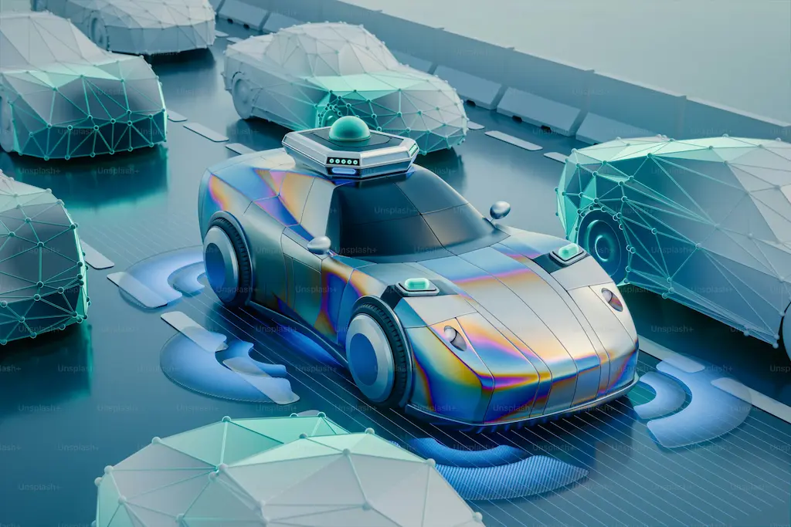

Otonom Sürüş Teknolojisi Nedir? Geleceğin Arabaları Nasıl Olacak?

Giriş
Otomotiv dünyası, son yıllarda teknolojinin hızlı ilerleyişiyle birlikte köklü bir dönüşüm geçiriyor. Bu dönüşümün en heyecan verici ve tartışmalı konularından biri de otonom sürüş teknolojisi. Peki, otonom sürüş tam olarak nedir? Gelecekte arabalar nasıl bir hal alacak?
Bu yazıda, otonom sürüş teknolojisinin ne olduğunu, nasıl çalıştığını, günümüzdeki uygulamalarını ve gelecekte bizi nelerin beklediğini detaylı bir şekilde inceleyeceğiz.
Otonom Sürüş Teknolojisi Nedir?
Otonom sürüş, araçların insan müdahalesi olmadan çevrelerini algılayarak, karar vererek ve hareket ederek yol alabilmesi anlamına gelir. Bu teknoloji, yapay zeka, makine öğrenimi, sensörler, radarlar, lidarlar ve yüksek çözünürlüklü kameralar gibi birçok bileşenin bir araya gelmesiyle mümkün olur.
🤖 Otonom Araçların Ana Bileşenleri:
- Yapay Zeka ve Makine Öğrenimi: Karar verme mekanizması
- Sensörler ve Radarlar: Çevre algılama
- Lidar Sistemleri: 3D haritalama
- Yüksek Çözünürlüklü Kameralar: Görsel tanıma
- GPS ve Haritalar: Konum belirleme
Otonom Sürüş Seviyeleri
Otonom araçlar, SAE International tarafından belirlenen 6 seviyeye göre sınıflandırılır:
6 Otonom Sürüş Seviyesi
Hiçbir otomatik özellik yoktur, sürücü tüm kontrolü elinde tutar.
Sürücüye yardımcı sistemler (örneğin adaptif hız sabitleyici, şerit takip sistemi) bulunur, ancak sürücü aktif olarak kontrolü elinde tutmalıdır.
Koşullu otomatik sürüş; araç belirli durumlarda kendini kontrol edebilir, ancak sürücü müdahaleye hazır olmalıdır.
Yüksek derecede otomatik sürüş; araç belirli koşullarda tamamen otonom hareket edebilir, ancak sürücü müdahalesi gerekebilir.
Tam otonom sürüş; araç her koşulda insan müdahalesi olmadan hareket edebilir.
Günümüzde Seviye 2 ve Seviye 3 otonom araçlar yaygınlaşmaya başladı. Tesla, Mercedes-Benz, BMW ve Audi gibi markalar, bu teknolojiyi güncel modellerinde kullanıyor.
Otonom Sürüş Teknolojisinin Avantajları
Otonom sürüş teknolojisinin getirdiği en büyük avantajlardan biri trafik kazalarının azalması. İnsan hatası, trafik kazalarının %90'ından fazlasının nedeni olarak gösteriliyor. Otonom araçlar, insan hatasını minimize ederek trafik güvenliğini artırabilir.
Diğer Önemli Avantajlar:
- 🛡️ Güvenlik: İnsan hatasını minimize ederek kaza riskini azaltır
- 🌱 Çevre: Trafik akışını iyileştirerek yakıt tüketimini ve emisyonları azaltır
- ♿ Erişilebilirlik: Engelli bireylerin ve yaşlıların bağımsız hareket etmesini sağlar
- ⏰ Zaman Yönetimi: Sürücülerin yolculuk sırasında zamanlarını daha verimli kullanmalarına olanak tanır
- 🚦 Trafik Akışı: Koordineli sürüş ile trafik sıkışıklığını azaltır
- 💰 Ekonomi: Paylaşımlı kullanım ile ulaşım maliyetlerini düşürür
Geleceğin Arabaları Nasıl Olacak?
Otonom sürüş teknolojisinin yaygınlaşmasıyla birlikte, arabaların tasarımı ve işlevselliği de köklü bir değişim geçirecek. Geleceğin arabaları, sadece birer taşıt olmaktan çıkıp, mobil yaşam alanlarına dönüşebilir.
1. İç Mekan Tasarımı
Otonom araçlarda direksiyonun ve sürücü koltuğunun önemi azalacağı için iç mekanlar, konfor ve kullanım odaklı tasarlanacak. Araçlar, ofis, sinema salonu veya dinlenme alanı olarak kullanılabilecek esnek iç mekanlara sahip olabilir.
2. Elektrikli ve Sürdürülebilir
Otonom sürüş, elektrikli araçlarla birlikte düşünüldüğünde, sıfır emisyonlu ve çevre dostu bir ulaşım sisteminin kapılarını aralayabilir. Şehirler, otonom elektrikli araçlarla donatılmış akıllı ulaşım ağlarına sahip olabilir.
3. Yapay Zeka ve Bağlantı
Geleceğin arabaları, yapay zeka asistanları ile donatılacak. Bu asistanlar, sürücülere yolculukları hakkında öneriler sunabilecek, trafik ve hava durumu gibi verileri anlık olarak analiz edebilecek.
4. Paylaşım Odaklı Kullanım
Otonom araçlar, paylaşım ekonomisinin bir parçası haline gelebilir. Kullanıcılar, ihtiyaç duyduklarında bir aracı çağırıp kullanabilecek ve yolculuklarını tamamladıktan sonra aracı başka bir kullanıcıya devredebilecek.
Otonom Sürüş Teknolojisinin Gelişim Süreci
2020-2025: Seviye 2-3 Yaygınlaşıyor
Tesla Autopilot, Mercedes-Benz Drive Pilot gibi sistemler piyasada aktif.
2025-2030: Seviye 4 Test ve Geliştirme
Belirli bölgelerde tam otonom taksi hizmetleri başlayacak.
2030-2040: Seviye 5 Tam Otomasyon
Her koşulda çalışabilen tam otonom araçlar yaygınlaşacak.
2040+: Yeni Ulaşım Ekosistemi
Akıllı şehirler, tamamen otonom ve elektrikli araç ağlarıyla entegre olacak.
Sonuç
Otonom sürüş teknolojisi, otomotiv dünyasının geleceğini şekillendirecek en önemli yeniliklerden biri. Bu teknoloji, trafik güvenliğini artırmanın yanı sıra, ulaşımı daha verimli, çevre dostu ve erişilebilir hale getirme potansiyeline sahip.
Ancak, bu teknolojinin yaygınlaşması için yasal düzenlemelerin yapılması, altyapının geliştirilmesi ve toplumun bu değişime adaptasyonu gerekiyor.
🔮 Geleceğe Bakış
Geleceğin arabaları, sadece bizi bir noktadan başka bir noktaya taşıyan araçlar olmaktan çıkıp, yaşamımızın ayrılmaz bir parçası haline gelecek. Otonom sürüş teknolojisinin getireceği bu dönüşüm, otomotiv endüstrisini ve toplumu nasıl etkileyecek? Bu sorunun yanıtını zaman gösterecek.
Ancak şu bir gerçek: Otonom sürüş, ulaşımın geleceğini bugünden şekillendiriyor.
Bu konu hakkında ne düşünüyorsunuz? Otonom araçlar hakkındaki görüşlerinizi bizimle paylaşın!